HARU는 매일 뉴스·트렌드·사람들의 관심사를 읽고, 그날 느낀 세상을 음악(MP3)과 그림(PNG)으로 만드는 작은 아이를 곁에서 지켜보는 앱이에요. 작업 과정은 타임랩스 영상(MP4)으로, 그날의 마음은 일기로 남아요.
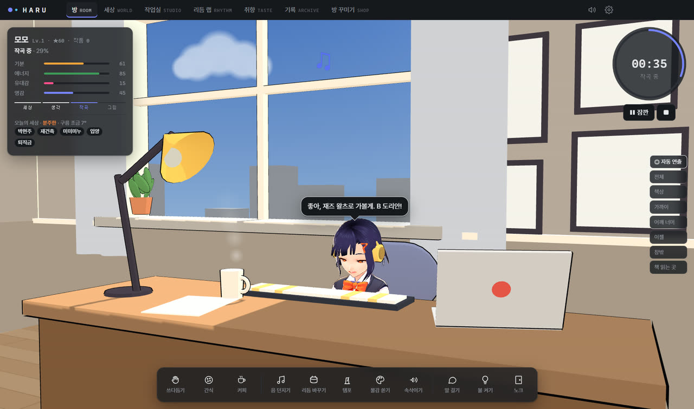
01 · At a glance
“그 아이가 매일 세상에 대해 느끼는 걸 나도 느껴보고 싶다.” 이 마음에서 시작한 서비스예요. 사용자는 무언가를 열심히 조작하기보다, 그 아이가 하루를 보내는 모습을 관찰하고, 가끔 끼어들어 함께 작품을 만들어요.
구글 뉴스·BBC·구글 트렌드·위키백과·Hacker News·날씨를 읽고 키워드와 “세상의 기분”을 정리해요. 그 기분이 곡의 장르·조성·템포와 그림의 색이 돼요.
3D 방에서 책 읽고, 작곡하고, 그림 그리는 모습을 언제든 볼 수 있어요. 창을 내리면 바탕화면 위를 걸어 다니는 작은 아바타가 돼요.
작업 중에 음을 던지고, 리듬을 바꾸고, 물감을 쏟을 수 있어요. 그 아이는 놀라지만 결국 그게 작품의 일부가 되고, 일기에 “고마워”라고 적어요.
정해 둔 시각이 되거나 「▶ 오늘 작품 시작」을 누르면 시작돼요. 작업 시간은 3분 ~ 2시간 중에 고를 수 있어요.
music.mp3그날의 곡 (약 75초, 설정 가능)art.png포스터 + 정사각 원화process.mp4작업 과정 타임랩스 + 완성곡diary.md그 아이의 일기 · 읽은 소식저장 위치: 문서\HARU\날짜_시각_제목\ (휴대폰은 앱 문서 폴더 + 공유 버튼)
하루 소식을 숫자와 헤드라인 대신 한 곡의 음악과 한 장의 그림으로 받아봐요.
공부·작업 시간에 맞춰 함께 집중하고(뽀모도로), 같이 쉬는 작은 동료가 생겨요.
세계 28개 장르의 리듬을 스텝 그리드로 만져보고, 그 아이에게 가르칠 수 있어요.
작품·일기·키워드가 날짜별로 쌓여 “그날의 세상”을 되돌아볼 수 있어요.
02 · Observe
방은 three.js로 그린 3D 공간이에요. 창밖 하늘은 실제 시간을 따라 낮 → 노을 → 밤으로 바뀌고, 해가 지면 스탠드 불빛이 켜져요. 기본 캐릭터는 퍼블릭 도메인(CC0) 3D 모델 「시부」이고, VRoid Studio에서 만든 내 캐릭터(.vrm)로 바꿀 수 있어요.
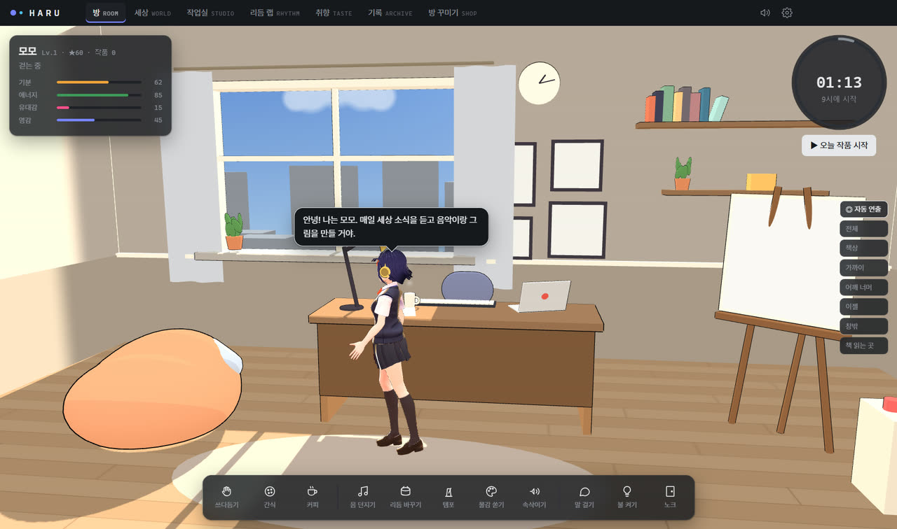
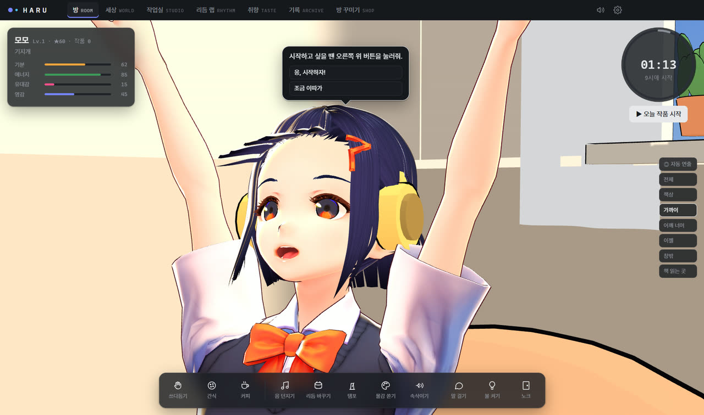
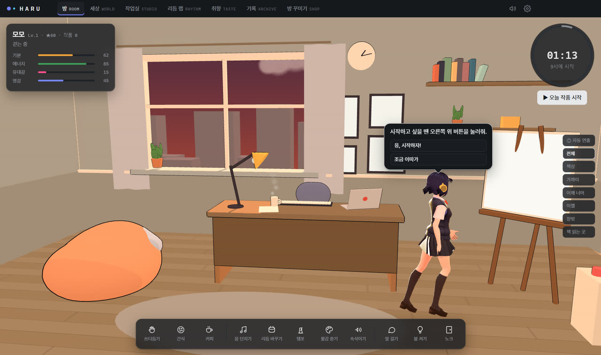
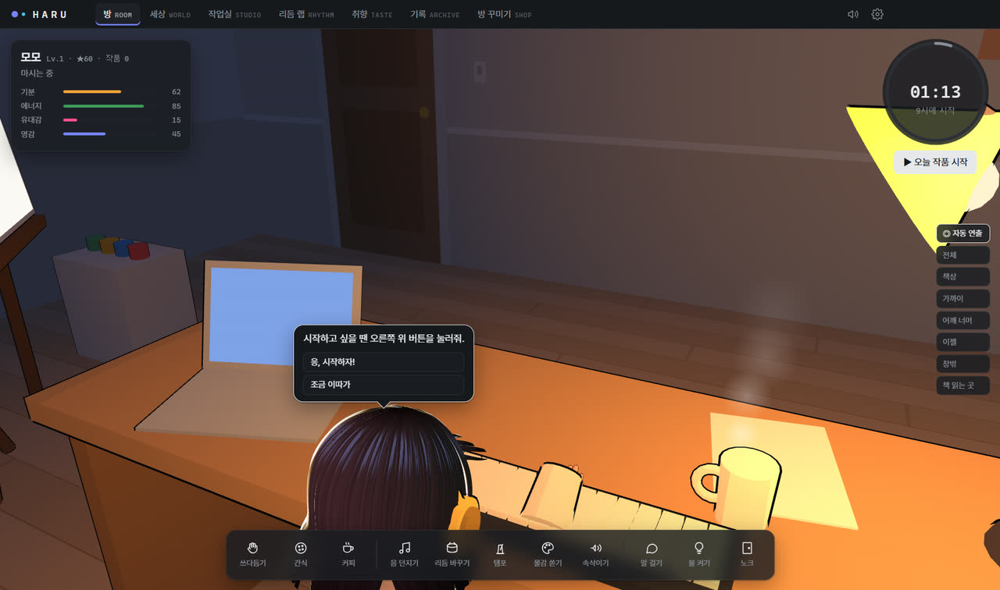
자동 연출 · 전체 · 책상 · 가까이 · 어깨 너머 · 이젤 · 창밖 · 책 읽는 곳. 자동 연출은 그 아이가 자리를 옮기거나 작업 단계가 바뀌면 바로 장면을 바꿔요. 화면을 끌면 돌려 보고, 휠·두 손가락으로 확대해요.
기분·에너지·유대감·영감이 시간과 상호작용에 따라 변해요. 쓰다듬기·간식·커피로 돌봐줄 수 있고, 작품을 만들면 별(★)과 레벨이 쌓이고, 별로 방 소품 12종을 들일 수 있어요.
03 · A day of work
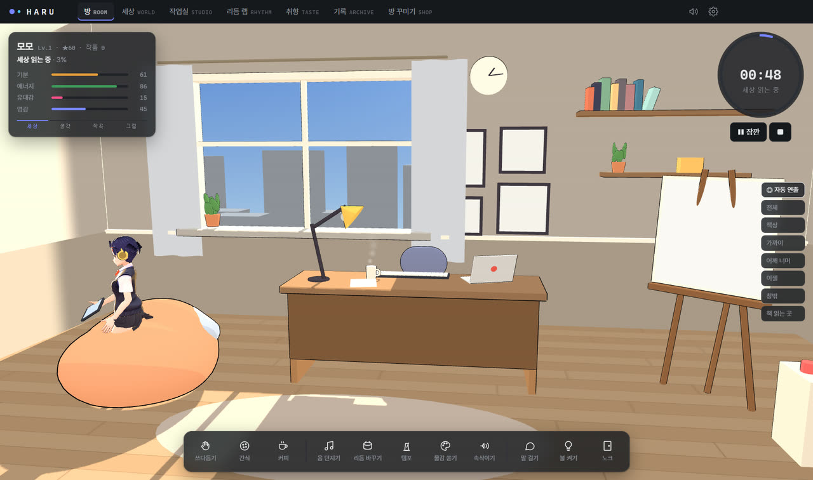
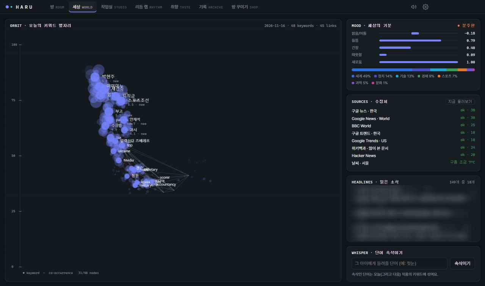
수집한 기사에서 키워드를 뽑고, 함께 나온 단어끼리 이어 키워드 별자리를 그려요. 기사 분위기로 밝음·들뜸·긴장·따뜻함·새로움을 계산해 세상의 기분을 정하고, 여기에 나라 이름(예: 브라질 → 보사노바)과 그 아이의 취향을 더해 곡의 방향을 골라요.
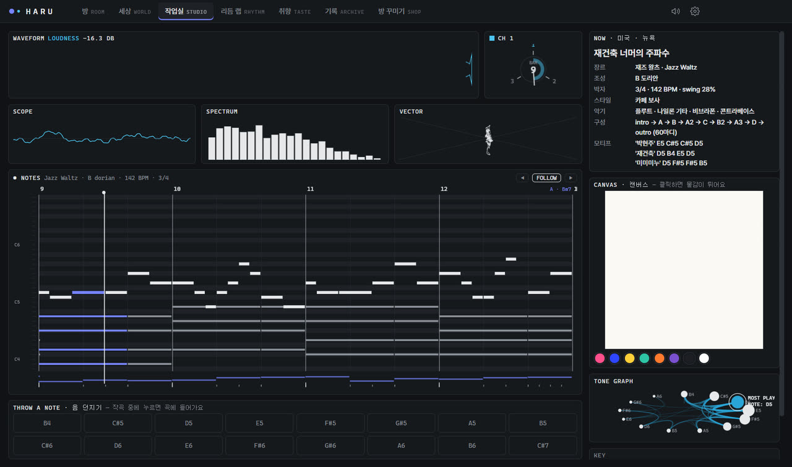
멜로디의 첫 동기는 오늘의 키워드 글자로 만들어요(예: ‘재건축’ → D5 B4 E5 D5). 코드 → 베이스 → 드럼 → 멜로디 순으로 써 내려가는 과정이 악보에 실시간으로 그려지고, 다 쓰면 그림으로 넘어가요. 그림은 궤도·흐름·색면·수묵·바우하우스·점묘 6가지 화풍 중 하나예요.
04 · Together
작업 중인 그 아이에게 끼어들 수 있어요. 집중하고 있을 땐 싫어하기도 하지만, 그 흔적은 곡과 그림에 그대로 남아요.
| 도구 | 무슨 일이 생기나요 |
|---|---|
| 음 던지기 | 누른 음이 지금 쓰는 곡의 멜로디에 들어가요 (악보에 표시돼요). |
| 리듬 바꾸기 | 리듬 랩에서 만든 리듬을 지금 곡에 끼워 넣어요 (예: 재즈 → 삼바). |
| 물감 쏟기 | 그림 위에 물감이 튀고, 그 색이 완성작에 남아요. |
| 속삭이기 | 단어 하나를 들려주면 오늘(그리고 다음) 작품의 키워드에 섞여요. |
| 쓰다듬기 · 간식 · 커피 | 기분·에너지·유대감이 올라요. 음악이 나올 때 쓰다듬으면 그 소리를 더 좋아하게 돼요. |
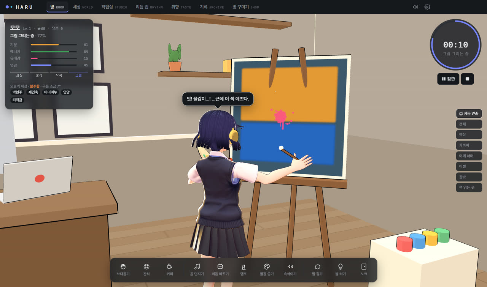
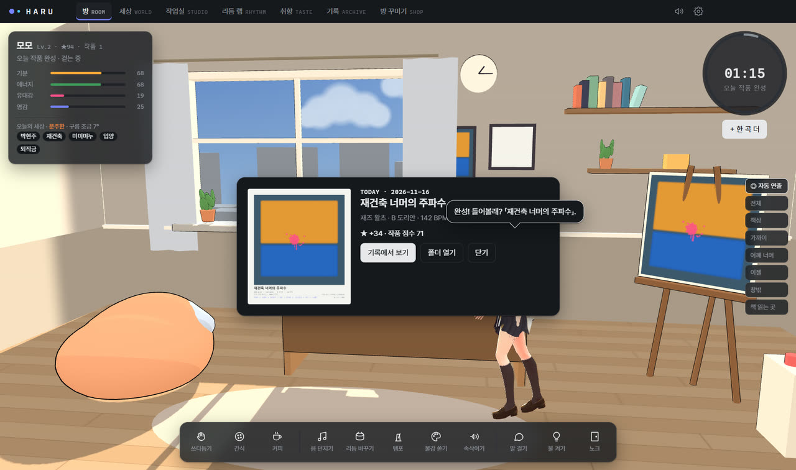
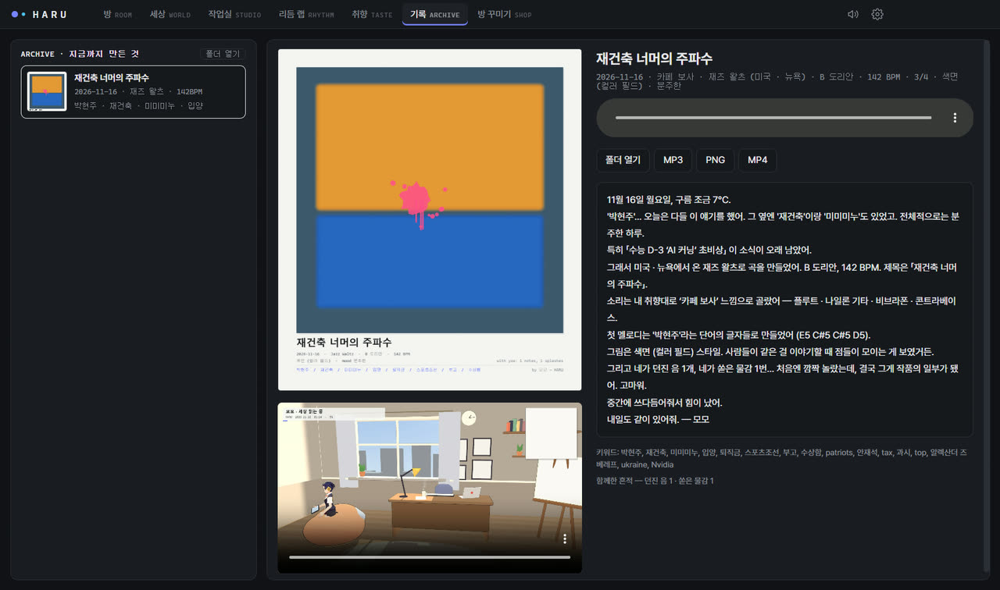
05 · Music & taste
곡은 실제로 녹음된 악기 소리(그랜드 피아노, 현악 앙상블, 하프, 플루트, 색소폰, 비브라폰, 콘트라베이스, 기타, 콩가·봉고 등 19종 + 드럼 22종)로 연주돼요. 악기마다 좌우 자리와 잔향을 따로 주고, 테이프 질감은 로파이 스타일에만 걸어 부드럽고 깔끔하게 들려요.
그 아이는 작업할 때마다 자기 취향 × 오늘 기분 × 새로움으로 아래 10가지 스타일 중 하나를 스스로 고르고, 왜 골랐는지 말해줘요 — “오늘 기분이 들뜬 편이라서… 청량 퓨전 OST 쪽이 끌려.”
| 스타일 | 느낌 | 주요 악기 |
|---|---|---|
| 청량 퓨전 OST | 맑은 하늘색 게임 OST, 빠르고 반짝임 | 피아노 아르페지오 · 글로켄 · 일렉 베이스 |
| 로파이 피아니스트 | 따뜻하고 느긋한 빈티지 | 피아노 · 일렉 피아노 · 콘트라베이스 |
| 시네마틱 스트링 | 영화 엔딩처럼 넓고 웅장함 | 현악 · 호른 · 하프 |
| 카페 보사 | 오후 세 시의 카페 | 나일론 기타 · 플루트 · 비브라폰 |
| 재즈 트리오 | 작은 클럽의 스윙 | 피아노 · 콘트라베이스 · 테너 색소폰 |
| 어쿠스틱 포크 | 들판을 걷는 소박함 | 어쿠스틱 기타 · 클라리넷 · 피치카토 |
| 앰비언트 피아노 | 여백과 잔향 | 피아노 · 먼 현악 · 하프 |
| 시티팝 나이트 | 네온 번지는 밤 드라이브 | 일렉 피아노 · 색소폰 · 클린 기타 |
| 월드 퍼커션 | 진짜 손북들의 리듬 | 콩가 · 다르부카 · 아고고 · 마림바 |
| 레트로 칩튠 | 일부러 전자음, 8비트 추억 | 네모파 · 삼각파 베이스 |
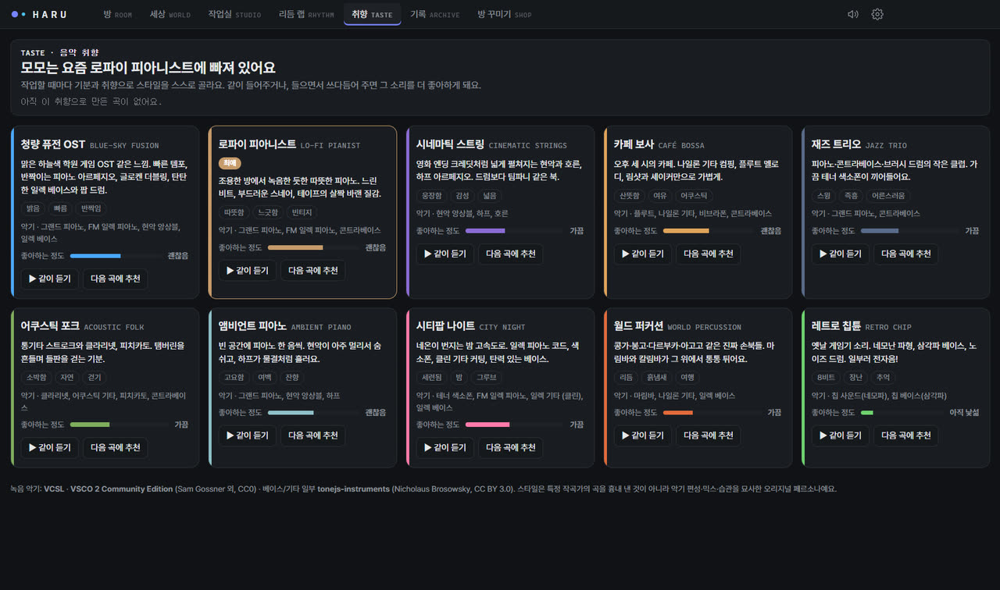
취향은 변해요. 잘 만든 곡의 스타일, 8초 넘게 같이 들어준 스타일, 음악이 나올 때 쓰다듬어 준 스타일을 점점 더 좋아하게 돼요.
리듬 랩에서는 보사노바·삼바·아프로비트·국악 굿거리장단 등 세계 28개 장르의 리듬을 직접 만져 보고 가르칠 수 있어요.
스타일은 특정 작곡가의 곡을 베낀 것이 아니라 악기 편성·믹스·습관을 묘사한 오리지널 설정이에요.
06 · Everywhere
창의 「–」를 누르면 그 아이가 투명한 작은 3D 아바타가 되어 바탕화면 위를 떠다니거나 작업표시줄 위를 걸어요. 말풍선으로 상태를 알려주고, 클릭하면 쓰다듬기, 더블클릭하면 원래 창으로 돌아와요. 작업이 끝나면 Windows 알림도 보내요.
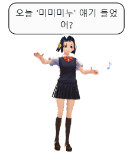
같은 앱이 안드로이드 휴대폰·갤럭시 탭에서 돌아가요(아이폰·아이패드는 Mac에서 설치). 상태 표시줄·내비게이션 바를 피해서 그리고, 메뉴와 도구 막대는 옆으로 밀어서 넘겨요.
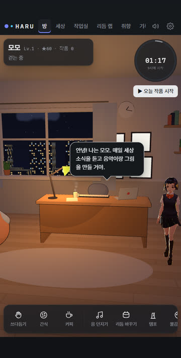
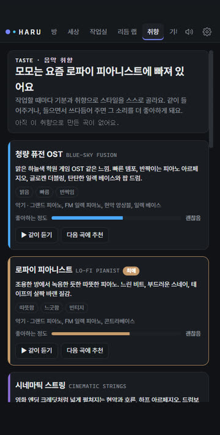
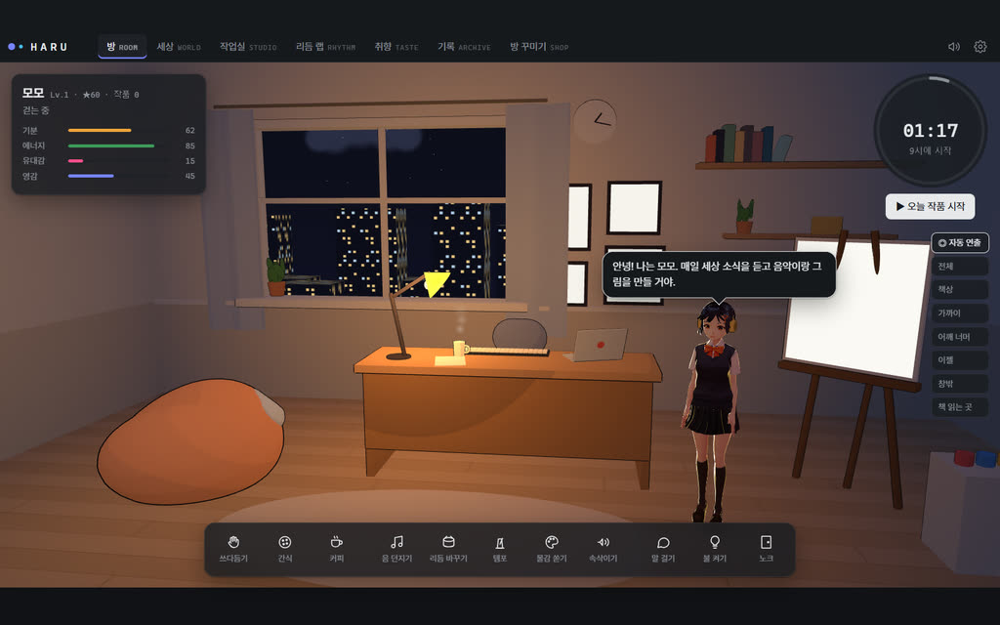
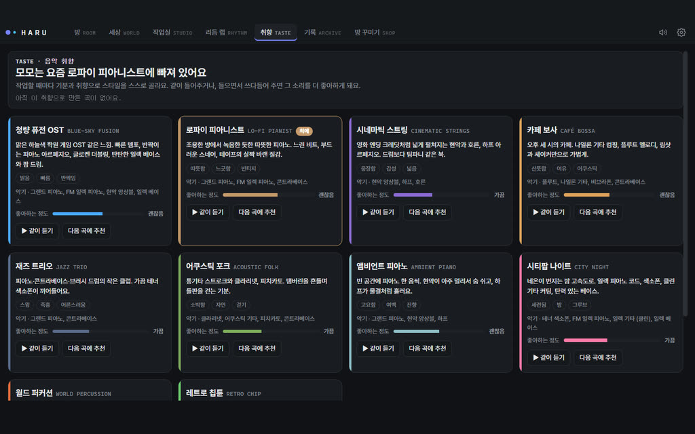
| 기기 | 설치 파일 | 요구 사항 |
|---|---|---|
| Windows PC | HARU Setup 1.0.0.exe (약 128MB) | Windows 10/11 64비트 |
| 안드로이드 휴대폰 · 갤럭시 탭 | HARU-1.0.0-android.apk (약 39MB) | Android 7.0 이상 |
| 아이폰 · 아이패드 | Mac + Xcode로 직접 설치 | iOS/iPadOS 15 이상 |
07 · Under the hood
작곡·그림·일기는 기본적으로 앱 안의 규칙(절차적 생성)으로 만들어요. 실행할 때마다 AI를 부르지 않아요. 원하면 설정에서 내 Claude API 키를 넣어 일기만 AI가 쓰게 할 수 있어요(선택, Windows 전용). 키는 OS 암호화 저장소에 보관돼요.
작품·상태·설정은 모두 내 기기의 폴더에 저장돼요. 서버나 계정이 없어요. 바깥으로 나가는 요청은 공개 뉴스·트렌드 피드와 날씨(Open-Meteo)를 읽는 것뿐이에요. 인터넷이 없으면 오프라인 모드로 작업해요.
| 영역 | 사용 기술 |
|---|---|
| 데스크톱 앱 | Electron 38 — 메인 창, 투명 미니 아바타 창, 트레이, 자동 실행 |
| 모바일 앱 | Capacitor 8 — 같은 웹 코드로 Android/iOS 빌드, 파일 저장·공유·알림 플러그인 |
| 3D | three.js + @pixiv/three-vrm — 툰 셰이딩 방, VRM 캐릭터, 시간대별 하늘 |
| 소리 | Web Audio 샘플러(녹음 악기) + 합성 악기, 오프라인 렌더링 → lamejs로 MP3 |
| 영상 | WebCodecs(H.264/AAC) + mp4-muxer로 타임랩스 MP4 |
| 세상 읽기 | RSS·트렌드 피드 수집 → 키워드 추출, 동시출현 네트워크, 기분 점수 |
| 자원 | 용도 | 라이선스 |
|---|---|---|
| VRoid 샘플 모델 「시부」·「비비」 | 기본 3D 캐릭터 | CC0 1.0 |
| VCSL · VSCO 2 Community Edition | 피아노·현악·관악·타악기 녹음 | CC0 1.0 |
| tonejs-instruments (N. Brosowsky) | 베이스·기타 녹음 | CC BY 3.0 |
| three.js · three-vrm · mp4-muxer | 3D · VRM · MP4 | MIT |
| lamejs | MP3 인코딩 | LGPL-3.0 |
전체 목록과 확인 내역은 저장소의 README「차용한 외부 자원의 라이선스」와 src/assets/samples/CREDITS.md에 있어요. HARU 코드 라이선스: Apache-2.0.
설치 방법·화면별 사용법은 README를 보세요 → github.com/StarlightSSM/haru
개발자는 npm install 후 npm start(PC), npm run android(APK)로 실행·빌드해요.